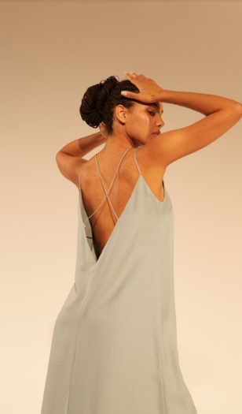
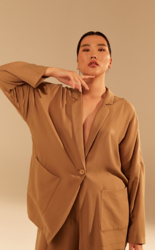

Нежный голубой, благородный зеленый, приглушенный песочный: небо, вода, трава и песок стали источником творчества.
Каждое платье — как момент единения с природой. Нежные и невесомые, они возвращают к истокам.
Искусственное волокно, максимально приближенное по своим качествам к натуральному.
Мы используем волокна TENCEL™ Lyocell, которые созданы с использованием технологии REFIBRA™ — вторичной переработки хлопковых отходов производства одежды.
Хлопковые остатки превращают в общую массу и смешивают с древесным эвкалиптовым сырьем — в результате получаются новые первичные волокна.
Лиоцелл не требует дополнительных ресурсов для производства и полностью возобновляем.
 Волокна TENCEL™
сертифицированы всемирноВолокна, которые произведены из отходов текстильной промышленности.
Мы сотрудничаем с финской компанией @purewaste (официальный дистрибьютор в Петербурге @fabrevizion).
Компания использует механическую переработку сырья. Отрезки ткани измельчаются, потом из массы вытягивают нити и ткут новую ткань. 60% этой ткани — переработанный хлопок, 40% — переработанный полиэстер.
Pure Waste не окрашивают текстиль с помощью красителей и химикатов — ткань приобретает свой цвет в соответствии с переработанными отходами.
Его производят из того же полимера, что используется при производстве пластиковых бутылок. А значит, использованная тара может быть переработана в волокно. Для этого пластиковое вторсырье моют, измельчают, расплавляют, придают получившейся массе форму волокон.
Полиэстер может быть переработан несколько раз, а не просто лежать на свалках. На переработку тратится на треть меньше энергии, чем на создание нового волокна. Это безопасный способ использовать полиэстер для производства одежды.
{kind=link}
{kind=link}
{kind=link}
{kind=link}